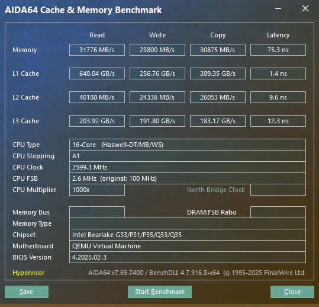
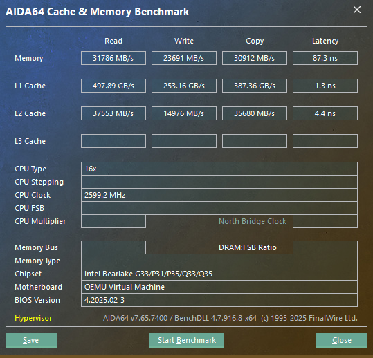
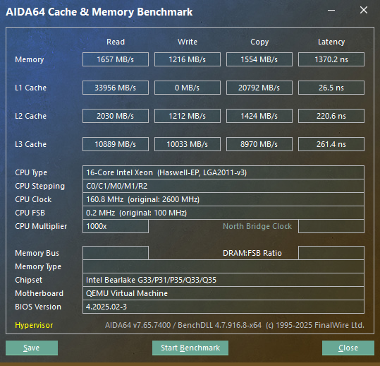
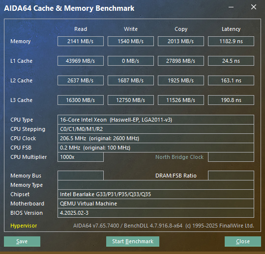
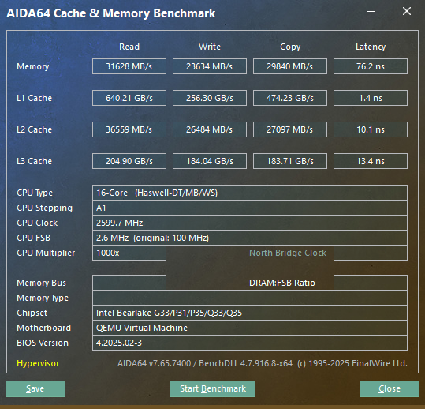

原文：Proxmox 中 CPU 類型對 Windows 客戶機記憶體性能影響 by Zen Wen
发布日期：2025 年 5 月 21 日 | CC BY-SA 4.0
前段时间看到了小林家的白渃发布的文章[1]，根据他的测试，Windows 客户机的内存性能损失是因为 CPU 类型设为 host 的原因。我自己按照了类似的流程做了测试，不过得出的结论略有不同，本文为测试结果的记录。
根据小林家的白渃的测试结果，Windows 客户机内存性能下降的原因是 host 提供的某些 CPU flag 可能触发了 Windows 的安全机制，导致性能下降，因此我也是从 CPU flag 上开始着手。
我使用另外一台 Linux 的客户机来获得对应 CPU 类型提供的 flag，使用以下指令取得。
$ lscpu | grep Flags | sed -e 's/Flags: //g' | tr ' ' '\n' | sort > host-flags这样只要 diff 就可以快速得知不同 CPU 类型对支持 flag 的区别：
$ diff haswell-notsx-flags haswell-notsx-IBRS-flags
24a25,26
> ibpb
> ibrs编辑 /etc/qemu-server/<id>.conf，加上 args 这一行。host 代表使用的 CPU 模型，后面的 +、- 为在此模型上加上或减掉的 CPU flag。加上 args: -cpu 后会覆盖掉 CPU 设定的部分，使用 qm showcmd <id> --pretty 来查看 QEMU 启动时的参数，args 的参数会被加在最后覆盖前面设定的参数。
args: -cpu host,-arch-capabilities,-flush-l1d,-pdcm,-pdpe1gb,-ss,-ssbd,-stibp,-tsc_adjust,-umip,-vmx,-vnmi我使用的 CPU 为 E5-2690 v3，为 Haswell 架构。经过测试能使用的 CPU 模型为 Haswell-noTSX 和 Haswell-noTSX-IBRS，无法使用 Haswell 和 Haswell-IBRS，推测是 Xeon 缺少消费级的一部分指令集。其中 Haswell-noTSX 和 Haswell-noTSX-IBRS 的区别为后者多了两个和 IBRS 相关的 flag，更接近 host 的 flag，因此主要是用这个模型和 host 进行测试。
首先测试基本模型的内存性能对比：

左上：host | 中上：haswell-noTSX | 右上：haswell-noTSX-IBRS

左下：max | 右下：x86-64-v2-aes
可以看到 max 和 host 都有内存性能的问题。
在原文作者的总结中，认为是 md-clear 和 flush-l1d 这两个 flag 导致操作系统启动漏洞修补从而影响性能。因此直接测试 host 在分别减去这两个 flag 后有没有影响：


左：无 md-clear flag | 右：无 flush-l1d flag
可以看到内存性能还是有问题的。
直接测试 host 减去所有比 haswell-noTSX-IBRS 多的 flag，以及把 haswell-noTSX-IBRS 加上所有能加的 flag。
host 减去所有能减掉的 flag 后，只比 haswell-noTSX-IBRS 多三个 flag：
5d4
< arch_perfmon
54d52
< ssbd
60d57
< stibphaswell-noTSX-IBRS 加上所有能加的 flag 后，只比 host 少 2 个 flag：
5a6
> arch_perfmon
47a49
> pdcm
左：host 减去所有能减的 flag | 右：haswell-noTSX-IBRS 加上所有能加的 flag
可以看到 host 模型的内存性能还是有问题的，而 haswell-noTSX-IBRS 加上所有 flag 后还是没有问题。因此作者认为可能和 CPU 漏洞没有很大的关系，不然就是和 pdcm 有关（能源管理部分）。
最后作者还是使用了原文文章中提供的解决方法——设定一个自定义的 CPU 模型，专门用来给 Windows 的虚拟机使用。
编辑 /etc/pve/virtual-guest/cpu-models.conf：
cpu-model: windows-host
flags +arch-capabilities;+flush-l1d;+md-clear;+pdcm;+pdpe1gb;+ss;+ssbd;+stibp;+tsc_adjust;+umip;+vmx
phys-bits host
hidden 0
hv-vendor-id proxmox
reported-model Haswell-noTSX-IBRS性能测试如下，没什么大问题：